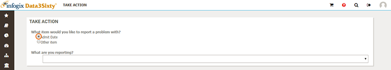
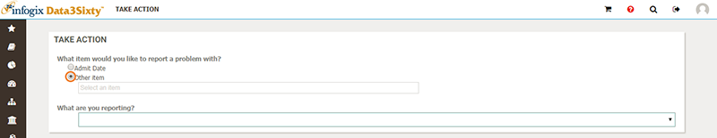

|
|
Raising issues
In addition to suggesting changes and modifications to artifacts, you can also raise issues.
- Open the details page for a specific artifact.
For example, to view the details of a Business Term, click the Business Assets icon on the left of the screen, select Business Term, then click to open the specific Business Term against which you want to take an action.
- From the artifact details page, click the Take Action button:

The Take Action page opens. By default, the Take Action page selects the artifact that you are viewing:

If you want to take an action against a different item, select Other item, then type in the Select an item search bar to locate the item:

- Select an issue type from the What are you reporting? list. You can choose from any action types that have been allocated to the selected asset.
- Select a severity level in the Criticality field. Choose from:
- Negligible
- Low
- Medium
- High
- Critical
- Add a description of the issue in the Description Of Problem field.
- Click Save.